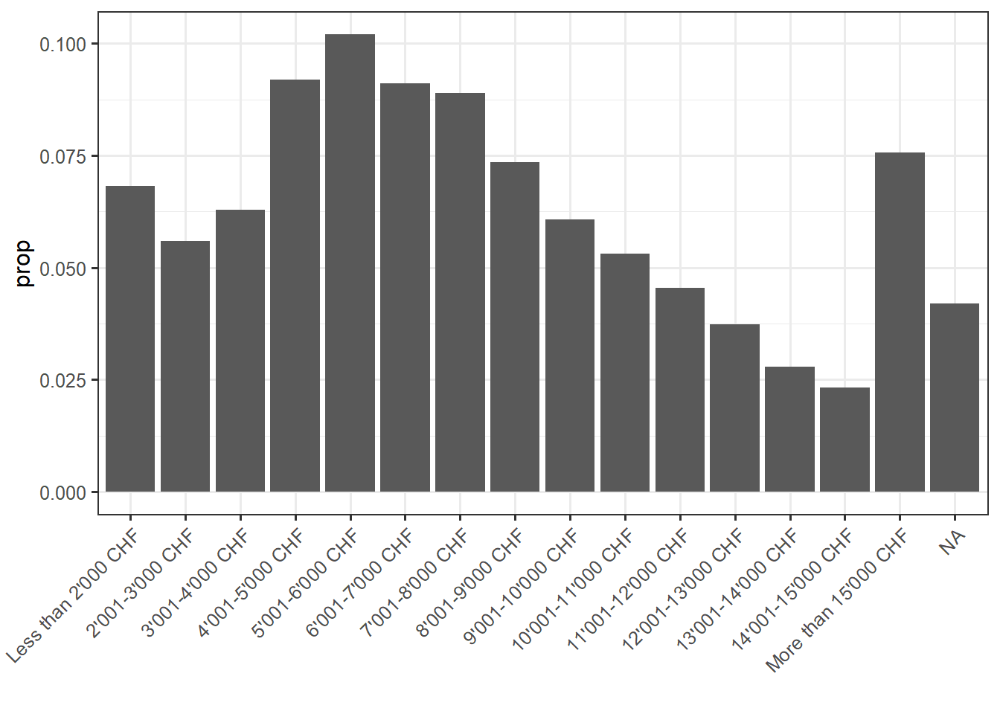
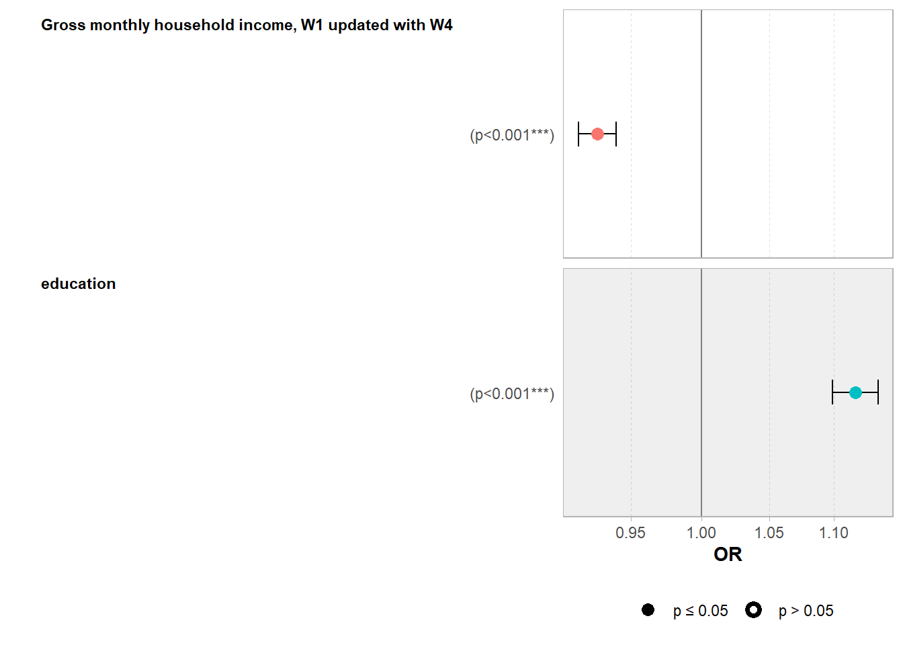
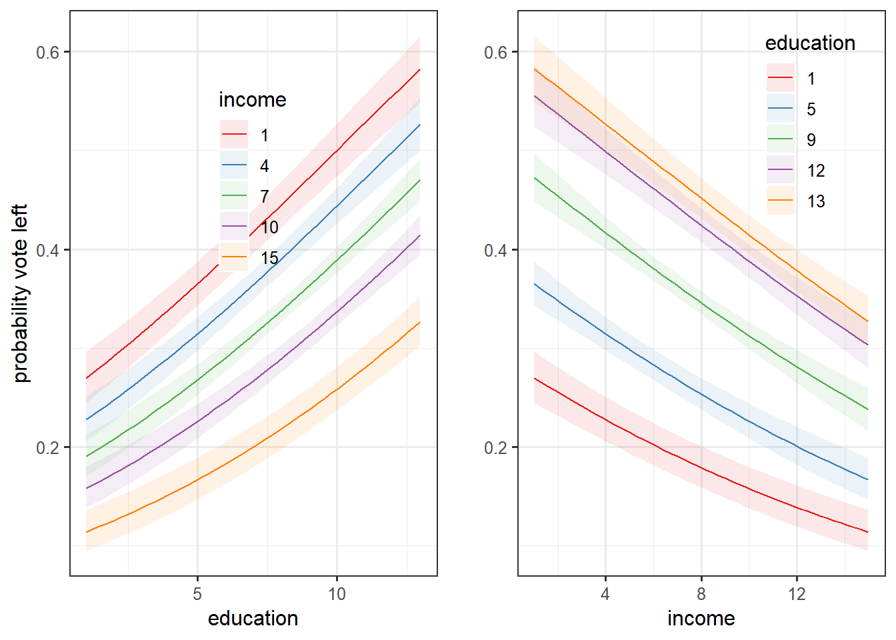

Note: this post is not finished and still in progress
Two years ago, Piketty and his team published a fascinating book about the evolution of political cleavages in almost all democratic countries in the world and even beyond. The publication of this book and of its online database got me very interested in the study of political cleavages from a political economy approach. This book contains huge amount of findings and observations, but there is one which is really emphasized by the authors: from roughly the 1980s until, the class-based political divide has become a multidimensional one incorporating a “educational” or, in Inglehart terms, a “postmaterial” or “cultural” cleavage (Gethin, Martinez-Toledano, and Piketty 2021) (Inglehart 1971). Very shortly, They found that the electoral support for the left shifted from the low income and low education classes to the highly educated ones. Regarding the electoral support for the right, the latter remains positively correlated with income.
This post is going to simply test this finding for Switzerland using the post-electoral survey for the National Council election in 2019. The following analysis is based on data analysis of the Swiss Election Study (Selects) of 2019. The dataset can be found here. I will test if the support for the left is linked positively with the education level and negatively with income.
To analyze the link between vote for the left (dependent variable) and income and education, I create a dummy variable from the variable “W1_f1085_90” which asked for which party the respondent is going to vote for in the 2019 national council election. The indicator variable is equal to 1 if the respondent declared voting for the socialist party, the greens, the christian socialist party or for far left parties (swiss labour party, solidarités, ensemble à gauche…)
Regarding the independ variables, the variable “f28910” asks the gross monthly houshold income of the individual and the variable has 15 income brackets (we thus do not have directly the income of the respondant). For education, “f21310” asks the highest level of achieved education. Here is below descriptive statistics for these variables:

First model: binary logistic regression
Let’s first start with a logistic regression. I simply regress the vote for the left with income and education. I leave education and income coded as numerical variables for now, since they have enough categories this is not big problem. Of course, that would have been better if I had directly the income of each individual and not brackets. Moreover, I could still do a Pareto interpolation, but I can’t due to lack of information: I don’t have the average income (total and per bracket) of the sample.
The model is thus:
\[ Log(\frac{P(left)}{1 - P(left)}) = \beta_0 + \beta_1income_i + \beta_2educ_i + \epsilon_i \]
Note that this is a very first step, I will step by step complexify this model.
Here is the regression table:
| Dependent variable: | |
| vote_left | |
| income | -0.075*** |
| (0.007) | |
| education | 0.111*** |
| (0.008) | |
| Constant | -1.033*** |
| (0.075) | |
| Observations | 6,866 |
| Log Likelihood | -4,342.283 |
| Akaike Inf. Crit. | 8,690.566 |
| Note: | p<0.1; p<0.05; p<0.01 |
Here is an odd ratios plot to have a better visualization of the coefficients:

Here is what this coefficient plot tells: the odds that a Swiss voter vote for a left-wing party for the National Council election in 2019 are linked negatively with income (odd ratio below 1) and positively with education (odd ratio > 1). The coefficients are statistically significant at the one percent level, which is not a surprise because the sample is rather large.
Odd ratios are known to be rather difficult to interpret. In effect, odd ratios are not what the literature calls “quantity of interest”, that is to say, the quantity of the dependent variable which is the most easy to interpret. I this model, the quantity of interest is the probability to vote for a left wing party and not the odds. A lot of economists and social scientists prefer to have a look directly at the marginal effects and predicted probability to have a better view of the relationships between the variables and of the quantity of interest.
I first plot simple graphs of the estimated curves. To do so, I use the function Invlogit from the plot3logit package and put the estimated coefficient into this function. To do such graphs, one has to make the explanatory variable on the x axis to vary while the other explanatory variables are held constant. A choice has thus to be made about which fixed value of the other factors (of Income for the education level plot and conversely), I decided to choose the median value.

We can see that the slope of the education level curve is steeper than the one for income: this means that the positive link between the level of education and the probability to vote for the left is greater than the negative one for income. But let’s have a look directly at the marginal effects.
There are a lot of different ways to compute marginal effects, which make the latter sometimes confusing because we don’t know which type of marginal effects we are talking about. I will here consider one type of marginal effects:
- Group-average marginal effects: slope estimates are produced for each row of the dataset used in computing the model. Then, the estimates can be grouped by the values of one of the regressor and the average for each group is computed.
A first step in group-average marginal effects in R is to use the function “slopes” which calculate estimates of the slopes (marginal effects) for each observation used to compute the model in the first place. The term “variables” is for the variable for which the slopes are estimated and “by” the argument for
marginaleffectseduc <- slopes(reg, variables = "education")
head(marginaleffectseduc)
Term Estimate Std. Error z Pr(>|z|) 2.5 % 97.5 %
education 0.0216 0.00156 13.9 <0.001 0.0186 0.0247
education 0.0277 0.00212 13.1 <0.001 0.0236 0.0319
education 0.0253 0.00204 12.4 <0.001 0.0213 0.0293
education 0.0261 0.00212 12.3 <0.001 0.0219 0.0303
education 0.0266 0.00202 13.2 <0.001 0.0226 0.0306
education 0.0220 0.00165 13.3 <0.001 0.0188 0.0252
Columns: rowid, term, estimate, std.error, statistic, p.value, conf.low, conf.high, predicted, predicted_hi, predicted_lo, vote_left, income, education dim(marginaleffectseduc)[1] 6866 14The dataframe has 5607 rows which is the same number of observation used in the model. We can then used the different values of income level (from 1 to 15) as grouped within which estimates are averaged:
marginaleffectseduc %>%
group_by(income) %>%
summarise(mean.slopes.educ = mean(estimate),
conf.high = mean(conf.high), ## this is the same for the confidence interval
conf.low = mean(conf.low)) %>%
ungroup() -> game.educ
head(game.educ)# A tibble: 6 × 4
income mean.slopes.educ conf.high conf.low
<dbl+lbl> <dbl> <dbl> <dbl>
1 1 [Less than 2'000 CHF] 0.0262 0.0299 0.0225
2 2 [2'001-3'000 CHF] 0.0258 0.0294 0.0221
3 3 [3'001-4'000 CHF] 0.0255 0.0290 0.0219
4 4 [4'001-5'000 CHF] 0.0251 0.0286 0.0216
5 5 [5'001-6'000 CHF] 0.0250 0.0285 0.0215
6 6 [6'001-7'000 CHF] 0.0250 0.0285 0.0214A plot can then be made to have a better view of the average marginal effects/slopes of education for each group of income:
game.educ %>%
ggplot()+
aes(x = income, y = mean.slopes.educ)+
geom_point()+
geom_line()+
geom_ribbon(aes(ymin = conf.low, ymax = conf.high), alpha = 0.5)+
theme_bw()+
labs(title = "Group-average marginal effect of education for each level of income group")+
ylab("Slopes education")
The slope of education level decreases on average with higher values of income group. This means that even if the probability to vote for the left is linked positively with education level, this link is weaker for higher income groups. However, it is not so much weaker because even though th line is downward slopping, it remains rather flat.
Normally, the function plot_slope should produce the same graph:
plot_slopes(reg, variables = "education", by = "income")
Let’s do the same for income:
marginaleffectsinc <- slopes(reg, variables = "income")
game.inc <- marginaleffectsinc %>%
group_by(education) %>%
summarise(mean.slopes.inc = mean(estimate),
conf.high = mean(conf.high),
conf.low = mean(conf.low)) %>%
ungroup() -> game.incgame.inc %>%
ggplot()+
aes(x = education, y = mean.slopes.inc)+
geom_point()+
geom_line()+
geom_ribbon(aes(ymin = conf.low, ymax = conf.high), alpha = 0.5)+
theme_bw()+
labs(title = "Group-average marginal effects of income for each level of education")+
ylab("Slopes income")Here the result is more interesting: the average marginal slope of income is negative for each education level but this average decreases with higher level of education. This implies that the probability to vote for the left is linked negatively with income group and that this negative link is strengthened by higher level of education. Rich and highly educated people have thus a very low probability to vote for the left.
Another way to look at the effect of the two independent variable on the probability to vote for the left is to look at the predictions.
predictionseduc <- predictions(reg, variables = c("education", "income"))
predictionseduc <- predictions(reg, by = c("education", "income"))plot_predictions(reg, condition = c("education", "income"))+
scale_color_brewer(palette = "Set1")+
scale_fill_brewer(palette = "Set1")+
theme_bw()+
theme(legend.position = c(0.5, 0.7),
legend.background = element_blank())+
ylab("probability vote left") -> plotpredicteduc
plot_predictions(reg, condition = c("income", "education"))+
scale_color_brewer(palette = "Set1")+
scale_fill_brewer(palette = "Set1")+
theme_bw()+
theme(legend.position = c(0.8, 0.8),
legend.background = element_blank())+
ylab("") -> plotpredictincome
cowplot::plot_grid(plotpredicteduc, plotpredictincome)
Those plots are essentially the same the first one, but with the confidence interval and for different values of the regressor considered fixed for certain values.
Another way is to compute directly the average marginal effects without grouping:
marginaleffectsinc <- slopes(reg, variables = "income")
marginaleffectseduc <- slopes(reg, variables = "education")
avg_effect_summary_reg <- rbind(summary(marginaleffectsinc), summary(marginaleffectseduc))
avg_effect_summary_reg
Term Contrast Estimate Std. Error z Pr(>|z|) 2.5 % 97.5 %
income mean(dY/dX) -0.0167 0.00150 -11.1 <0.001 -0.0196 -0.0137
education mean(dY/dX) 0.0245 0.00177 13.9 <0.001 0.0210 0.0279
Columns: term, contrast, estimate, std.error, statistic, p.value, conf.low, conf.high margins_summary(reg) factor AME SE z p lower upper
education 0.0245 0.0018 13.8684 0.0000 0.0210 0.0279
income -0.0167 0.0015 -11.0920 0.0000 -0.0196 -0.0137Here is a nice way to visualize the table above:
avg_effect_summary_reg %>%
ggplot()+
aes(x = estimate*100, y = term)+
geom_vline(xintercept = 0, color = "red")+
geom_pointrange(aes(xmin = conf.low*100, xmax = conf.high*100))+
theme_bw()+
xlab("Average marginal effects (percentage points)")+
ylab("")+
geom_label(aes(label = round(estimate*100, 3)), nudge_y = 0.15)The advantage of average marginal effects is the fact that they give information on the quantity of interest (here the probability to vote for the left) instead of odd ratio or log odds. The probability to vote for the left decreases on average by -1.6 percentage points if we compare two units which only differs by one income group level. Conversely, the probability increases on average by 2.5 percentage points if we compare two units which only differs by one level of education.
Complexifying the model
Hierarchical model
One possible and interesting way to complexify the model is to include the different Swiss canton into the regression. In fact, the previous regression model can be considered as a “complete pooling” model in which I made the asumption that the slopes of the coefficients do not vary by cantons. However, cantons represents an important level of analysis in Switzerland, because elections and politics are a lot structures at the cantonal level. Cantons can thus be considered as levels in which the observed individuals in our sample are grouped.
According to Gelman and Hill (2007) there are two main differents ways to consider these groups in regression analysis:
No pooling models: the slopes and/or the intercepts are allowed to vary across the groups freely.
Partial pooling models: the slopes and/or the intercepts are allowed to vary, but they are modeled (we consider that they follow a normal distribution)
In the present analysis, I will consider a partial pooling model in which the slopes and intercepts for income and education can vary. In R, partial pooling models can be estimated with the function lmer() from the lme4 package.
The results of this model can be then represented through a table with tab_model()
tab_model(glmer1, transform = NULL, title = "Partial Pooling model", digits = 3)| vote_left | |||
|---|---|---|---|
| Predictors | Log-Odds | CI | p |
| (Intercept) | -1.088 | -1.382 – -0.793 | <0.001 |
| Gross monthly household income, W1 updated with W4 |
-0.076 | -0.095 – -0.058 | <0.001 |
| education | 0.106 | 0.087 – 0.126 | <0.001 |
| Random Effects | |||
| σ2 | 3.29 | ||
| τ00 region | 0.33 | ||
| τ11 region.education | 0.00 | ||
| τ11 region.income | 0.00 | ||
| ρ01 | -0.82 | ||
| -0.61 | |||
| N region | 26 | ||
| Observations | 6866 | ||
| Marginal R2 / Conditional R2 | 0.041 / NA | ||
The random effects coefficients at the cantons level for income and education are 0, which implies that there is very low variation between cantons. Furthermore, the fixed effect coefficients are almost the same than the previous model: this new model is thus not a big improvement and shows that including cantons as a group does not change the model a lot.
However, it is still interesting to plot predicted probabilities to have a better overview:
plot_predictions(glmer1, condition = c("education", "income", "region"))+facet_wrap(~region)+
aes(linetype = income)+
scale_colour_brewer(palette = "Set1")+
labs(title = "Probabilités prédites selon le niveau d'éducation, pour chaque canton et pour différent niveau de revenu",
subtitle = "Election Conseil National 2015")+
geom_hline(yintercept = 0.5, alpha = 0.8)The relationship between the predicted probabilities to vote for the left and education is positive for every cantons. There are a lot of cantons that show similar relationships and curves and whose predicted probabilities, despite the positive link with education, do not go above 0.5 (with some exception such as Aargau, Thurgau, Tessin, Valais, Glarus…). The cantons which show different patterns are Basel-Stadt, Geneva, Jura, Vaud and Neuchâtel with higher predicted probabilities.
Adding variables to the model
Let’s now add some control variables to the model. The models above are flawed by the fact that there are only two regressors. One important assumption of regression models are the mean independence of the covariates with the error term. The model is assumed to include all the important explanatory variables in the model. If not, the estimates will be biased, so one can suspect that the coefficients estimates for this first model are heavily biased.
For the second model, I include gender (dummy with female = 1), age (in categories), religiosity (the higher, the less religious is the respondent), a variable indicating whether the respondent has a full-time job (full_time), whether the respondent works in the public sector (public) and marital status. I also include variables on issue position related to socio-economic issues such as EU integration, taxation and attitude towards foreigners (each one of these variables are ordinal on a 1-5 scale). Finally, I run the same model for the other main parties in Switzerland: the liberal radical party (center-right, plr), the Swiss people’s party (far-right, udc) and the two greens party (the greens, the liberal greens).
marginsfull %>%
ggplot()+
aes(x = AME*100, y = factor, color = party, group = party)+
geom_vline(xintercept = 0, color = "red")+
geom_pointrange(aes(xmin = lower*100, xmax = upper*100))+
theme_bw()+
xlab("Average marginal effects (percentage points)")+
ylab("")+
labs(title = "2019 Swiss national council election") +
facet_wrap(~party)+
theme(legend.position = "none",
)References
Gelman, Andrew, and Jennifer Hill. 2007. Data Analysis Using Regression and Multilevel/Hierarchical Models. Cambridge University Press.
Gethin, Armory, Clara Martinez-Toledano, and Thomas Piketty. 2021. Political Cleavages and Social Inequalities a Study of Fifty Democracies, 1948–2020. Harvard Univeristy Press.
Inglehart, Ronald. 1971. “The Silent Revolution in Europe: Intergenerational Change in Post-Industrial Societies.” The American Political Science Review 65 (4): 991–1017. https://www.jstor.org/stable/1953494.